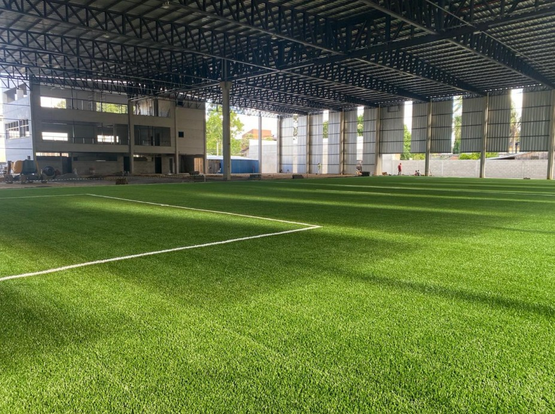
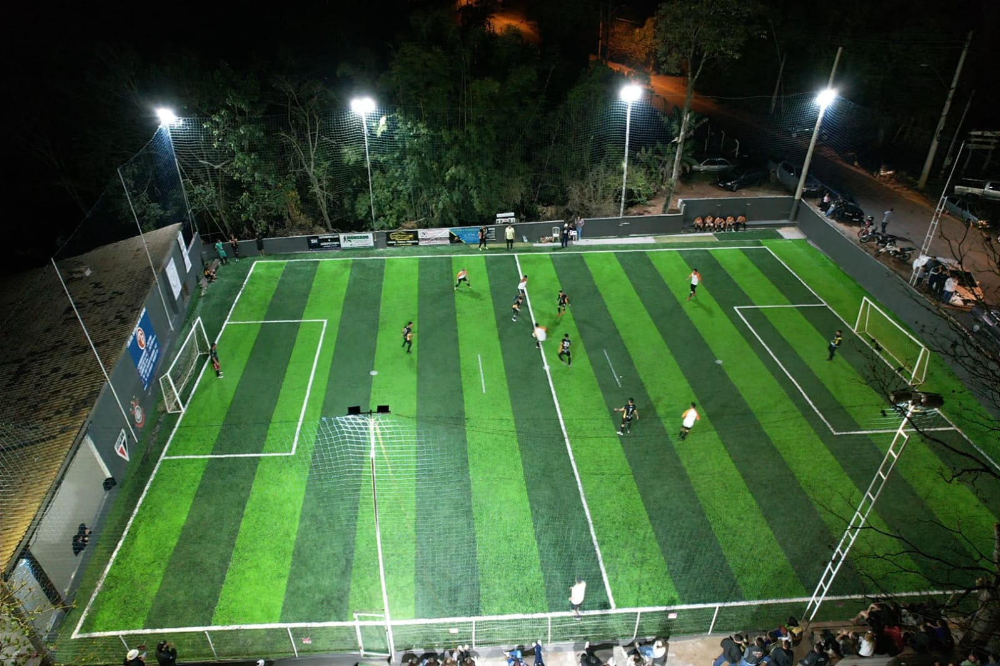
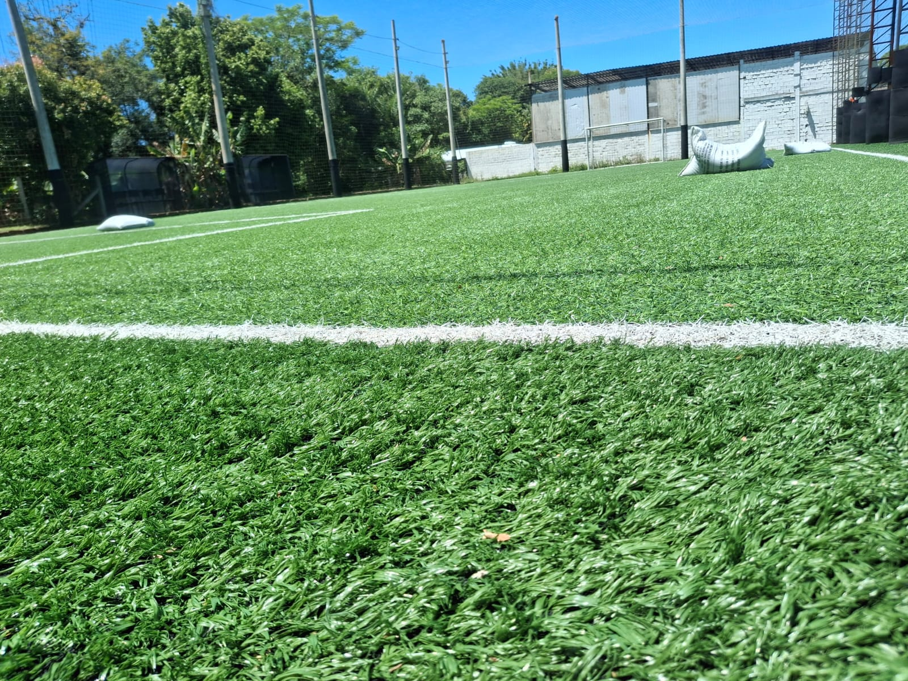

A grama sintética esportiva é ser fornecida com espessura de 50mm, fibrilada ou momento, dependendo da aplicação. A grama trançada custa R$ R$ 52,90/ m² e a momento R$ 57,90 /m². ATG Gramado Sintético tem expertise e casos de sucesso e grande satisafação de clientes em aplicações bastante diversas. Abaixo mostramos alguns serviços que realizamos nos últimos anos e que recebemos retorno bastante positivo de nossos clientes.

campo de futebol coberto.

Campo de futebol sem cobertura.
